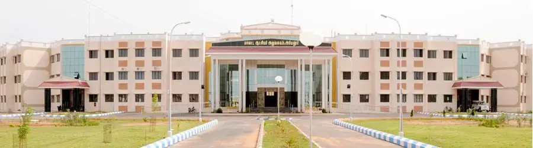

Beauty of Ariyalur
MEDICAL COLLEGE ARIYALUR

The Government Medical College in Ariyalur, Tamil Nadu, established in 2021, is a state-run institution affiliated with Tamil Nadu Dr. M.G.R. Medical University. The college offers an MBBS program with an annual intake capacity of 150 students. Admissions are conducted based on NEET-UG scores, following Tamil Nadu's state quota counseling procedures.
Key Details:
Facilities: The college provides separate hostel facilities for male and female students, modern infrastructure, and a library.
Fee Structure: For MBBS, the tuition fee is approximately ₹13,610 per year for general candidates. Additional charges apply for hostel accommodations and other facilities.
Bond Requirement: Students are required to sign a bond with a penalty clause of ₹5,00,000 in case of premature withdrawal.
Stipend: Interns receive a stipend of ₹25,000 per month during their mandatory one-year internship.
Cutoffs: The NEET cutoff scores for admission vary by category and are subject to change annually based on competition levels
V4EDU
RM GROUP OF EDUCATION BLOG
MEDICAL NEETUG
.